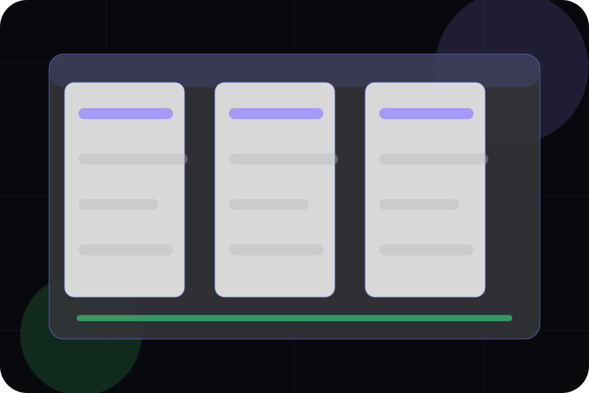

Fit
Who the offer is for, which scope it suits, and when a different route may be better.
Pricing / 01
Pricing opens as a clear software decision hub: what Orbit offers, who it helps, why it matters, and which route to take first.
The first screen combines positioning, proof, primary action, and fast internal navigation, so people can act immediately or compare the rest of the pricing route with context.
App interface hero
Select the closest route and Orbit keeps the next step, proof, and follow-up expectation aligned with speed, clarity, and product confidence.

Pricing / 02
Plans makes commercial comparison easier by showing fit, scope, and terms before software visitors ask for the next step.
The layout keeps price-sensitive decisions honest: it separates starting scope, fuller delivery, and ongoing support so the visitor can ask a sharper question.
View PricingWho the offer is for, which scope it suits, and when a different route may be better.
What is included clearly enough for software, saas platforms & digital products visitors to compare value without hidden jargon.
The practical details that should be confirmed before someone asks to schedule a demo.
Who the offer is for, which scope it suits, and when a different route may be better.
ScopedWhat is included clearly enough for software, saas platforms & digital products visitors to compare value without hidden jargon.
QuotedThe practical details that should be confirmed before someone asks to schedule a demo.
RetainerPricing / 03
Starter makes commercial comparison easier by showing fit, scope, and terms before software visitors ask for the next step.
The layout keeps price-sensitive decisions honest: it separates starting scope, fuller delivery, and ongoing support so the visitor can ask a sharper question.
Explore PricingWho the offer is for, which scope it suits, and when a different route may be better.
What is included clearly enough for software, saas platforms & digital products visitors to compare value without hidden jargon.
The practical details that should be confirmed before someone asks to schedule a demo.
Pricing / 04
Growth makes commercial comparison easier by showing fit, scope, and terms before software visitors ask for the next step.
The layout keeps price-sensitive decisions honest: it separates starting scope, fuller delivery, and ongoing support so the visitor can ask a sharper question.
Explore PricingWho the offer is for, which scope it suits, and when a different route may be better.
What is included clearly enough for software, saas platforms & digital products visitors to compare value without hidden jargon.
The practical details that should be confirmed before someone asks to schedule a demo.
Pricing / 05
Enterprise makes commercial comparison easier by showing fit, scope, and terms before software visitors ask for the next step.
The layout keeps price-sensitive decisions honest: it separates starting scope, fuller delivery, and ongoing support so the visitor can ask a sharper question.
Explore PricingWho the offer is for, which scope it suits, and when a different route may be better.
What is included clearly enough for software, saas platforms & digital products visitors to compare value without hidden jargon.
The practical details that should be confirmed before someone asks to schedule a demo.
Pricing / 06
Limits makes commercial comparison easier by showing fit, scope, and terms before software visitors ask for the next step.
The layout keeps price-sensitive decisions honest: it separates starting scope, fuller delivery, and ongoing support so the visitor can ask a sharper question.
Explore PricingOrbit frames limits around fit, scope, and terms so visitors can compare cost without losing the outcome.
Schedule DemoPricing / 07
Addons makes commercial comparison easier by showing fit, scope, and terms before software visitors ask for the next step.
The layout keeps price-sensitive decisions honest: it separates starting scope, fuller delivery, and ongoing support so the visitor can ask a sharper question.
Explore PricingWho the offer is for, which scope it suits, and when a different route may be better.
What is included clearly enough for software, saas platforms & digital products visitors to compare value without hidden jargon.
The practical details that should be confirmed before someone asks to schedule a demo.
Pricing / 08
Comparison makes commercial comparison easier by showing fit, scope, and terms before software visitors ask for the next step.
The layout keeps price-sensitive decisions honest: it separates starting scope, fuller delivery, and ongoing support so the visitor can ask a sharper question.
Explore Pricing
Who the offer is for, which scope it suits, and when a different route may be better.
Pricing / 09
Questions makes commercial comparison easier by showing fit, scope, and terms before software visitors ask for the next step.
The layout keeps price-sensitive decisions honest: it separates starting scope, fuller delivery, and ongoing support so the visitor can ask a sharper question.
Open ContactWho the offer is for, which scope it suits, and when a different route may be better.
What is included clearly enough for software, saas platforms & digital products visitors to compare value without hidden jargon.
The practical details that should be confirmed before someone asks to schedule a demo.
Orbit starts with a focused intake so the recommendation matches the visitor's context, risk, timing, and readiness.
Each route explains inclusions, exclusions, documents, timing, and the decision points that affect final delivery.
The theme uses dark product dashboard system, fine-line app cards, and pricing toggle, feature tabs, integration filter, product ui display rather than a shared template rhythm.
App interface hero
Select the closest route and Orbit keeps the next step, proof, and follow-up expectation aligned with speed, clarity, and product confidence.
Pricing / 10
Orbit closes the pricing route with a clear action, a quick reminder of the value, and a low-friction way to schedule a demo.
Visitors who are ready can use the primary action. Visitors who are still comparing can scan the section links, proof, and support routes before they schedule a demo.
Schedule DemoThe final block keeps the choice simple: act now, compare one more proof route, or send enough detail for a focused response.
Schedule Demospeed, clarity, and product confidence
A product-led SaaS site with a dark dashboard hero, precise modules, issue-like cards, and calm product copy. Pricing ends with a direct path to schedule a demo, plus enough context for visitors who still need to compare.
Information is provided for planning and should be reviewed for the final client, location, and operating rules.